OBSERVATORIO DE INDICADORES DE GÉNERO · UC TEMUCO
KIMNGÉNERO
Guía integral
Referencia canónica para navegar, diseñar, desarrollar, operar y actualizar el observatorio.
Trabajo colaborativo de la Dirección de Género, KIMN y Gobierno de Datos
Versión 1.0 · 27 de agosto de 2026
Institucionalización
Violencia de Género
Corresponsabilidad en los cuidados

Trayectorias laborales
Trayectorias educativas
Modelo educativo con PG
Participación en divulgación científica
Aporte de las mujeres
Contenido
Índice
- 1Cómo usar esta guía
- 2Propósito, audiencias y principios
- 3Identidad y recursos autorizados
- 4Paleta general y por dimensión
- 5Tipografía, composición y componentes
- 6Navegación y rutas públicas
- 7Stack técnico y arquitectura
- 8Modelo y actualización de indicadores
- 9Estados de datos e interfaz
- 10Visualizaciones y calendario
- 11Accesibilidad y contenido editorial
- 12Desarrollo, Docker, pruebas y despliegue
- 13Checklist, versión y referencias
Fuente única. Este HTML es la guía editable y canónica. El PDF se genera desde este archivo. README conserva sólo el inicio rápido y enlaza aquí.
Cómo usar esta guía
| Necesidad | Sección | Resultado esperado |
|---|
| Diseñar o revisar una pantalla | Color, tipografía, componentes y rutas | Interfaz consistente y accesible |
| Actualizar un indicador | Modelo y procedimiento de actualización | Dato validado, probado y trazable |
| Levantar o desplegar el sitio | Stack, desarrollo y Docker | Servicio operativo y verificable |
| Publicar el calendario | Visualizaciones y calendario | Calendario público, embebido y recuperable |
01 · Contexto
Propósito, audiencias y principios
KIMNGÉNERO es la plataforma institucional para consultar y analizar los indicadores de
género de la Universidad Católica de Temuco. Esta guía permite a los equipos de diseño, desarrollo, datos,
contenidos y comunicaciones producir y mantener páginas coherentes sin volver a decidir colores, tipografías,
componentes o tono en cada actualización.
Audiencias
| Audiencia |
Necesidad |
Respuesta de la interfaz |
| Comunidad universitaria |
Comprender brechas y tendencias |
Síntesis clara, filtros y ficha técnica |
| Equipos de gestión y decisión |
Evidencia comparable |
Metadatos, fuente, período y visualización |
| Investigación y docencia |
Interpretar y reutilizar |
Metodología, glosario y datos abiertos |
| Público general |
Entender propósito y resultados |
Lenguaje directo y navegación predecible |
| Equipos mantenedores |
Actualizar sin perder consistencia |
Tokens, patrones, plantillas y checklist |
Principios obligatorios
- El dato necesita contexto. Toda cifra incluye unidad, período, fuente y alcance.
- La estructura debe ser reconocible. Navegación, búsqueda y acciones aparecen donde se
esperan.
- La accesibilidad es parte del diseño. Contraste, teclado, semántica y alternativas textuales
no son opcionales.
- El color refuerza, no reemplaza. Estados y dimensiones también se distinguen con texto e
íconos.
- La información actual prevalece. Se muestra fecha de corte y no se presenta como vigente un
dato no validado.
- La interfaz explica antes de exigir. Divulgación progresiva: resumen, detalle y metodología.
03 · Identidad
Identidad y recursos autorizados
KIMNGÉNERO es el nombre oficial del observatorio. La Dirección de Género, KIMN y Gobierno de Datos participan mediante trabajo colaborativo. Esta guía no establece dependencia, pertenencia ni jerarquía entre esas entidades.
| Elemento | Uso | Regla |
|---|
| KIMNGÉNERO | Nombre público del observatorio | Usar siempre esta grafía en títulos y texto institucional. |
| UCT | Identidad institucional | Usar el activo oficial y respetar su área de seguridad. |
| Dirección de Género, KIMN y Gobierno de Datos | Entidades colaboradoras | Nombrar la colaboración sin inferir relaciones jerárquicas. |
Activo no autorizado: logo-kimn-obs.png no forma parte de la identidad activa. La existencia de un archivo en el repositorio no autoriza su uso.
Activos canónicos
| Activo | Ruta | Uso |
|---|
| UCT | client/public/assets/logo-uct.webp | Franja institucional |
| Dirección de Género | client/public/assets/footer/ | Crédito “KIMNGÉNERO es parte de” |
| Gobierno de Datos | client/public/assets/footer/ | Crédito “Impulsado por” |
| KimnIA | client/public/assets/kimnia-*.png | Tarjetas de /kimnia |
| Dimensiones | client/public/assets/dimensions/ | Identificación temática; preferir SVG |
Reglas de recursos
- Conservar proporción, fondo y área de seguridad; no deformar, recolorear ni recortar marcas.
- Usar SVG para iconografía y WebP/PNG para imágenes.
- Todo recurso informativo lleva texto alternativo; los decorativos usan
alt="". - Los íconos de dimensión no sustituyen su nombre textual.
03 · Color
Sistema de color (paleta utilizada)
La paleta activa del sitio se define por tokens en client/src/index.css (marca, texto, superficies,
estados) y en dimensionColors.ts (dimensiones). No se agregan colores hexadecimales sueltos
en componentes.
Paleta de marca
| Color |
Hex |
Función |
Texto |
| Azul primario |
#0176DE |
Acción, enlace, énfasis |
Blanco |
| Azul estructural |
#03122E |
Header, alta jerarquía |
Blanco |
| Azul
claro |
#E8F2FF |
Superficie informativa |
#173F8A |
| Azul secundario |
#173F8A |
Texto y acción alternativa |
Blanco |
| Amarillo
institucional |
#FEC60D |
Acento y foco |
#03122E |
| Azul medio |
#B3D9FF |
Bordes y separadores |
#03122E |
La franja institucional UCT (barra superior) usa el gradiente
#048FD4 → #0087CC con texto blanco en Roboto.
Texto, superficie y borde
| Token |
Hex / valor |
Uso |
--brand-dark |
#03122E |
Títulos y estructuras oscuras |
--text-secondary |
#5F6368 |
Texto secundario |
--text-muted |
#6B7280 |
Ayudas y metadata |
--border-light |
#E5E5E5 |
Límites no semánticos |
| superficie base / alt / strong |
blanco / #E8F2FF / #03122E |
Fondo general / paneles / estructuras fuertes |
| sombra de tarjeta |
0 2px 8px rgba(1,118,222,.08) |
Tarjetas y KPIs |
Colores de estado
| Estado |
Color |
Aplicación accesible |
| Correcto / actualizado |
#27AE60 |
Ícono o borde; si es fondo, texto #03122E |
| En actualización |
#F59E0B |
Fondo con texto #03122E |
| Atrasado / error |
#D8002D |
Fondo con texto blanco |
| Información |
#0176DE |
Fondo con texto blanco |
| Deshabilitado |
#E5E5E5 |
Texto #5F6368 |
Regla: no usar los colores de estado como sustitutos de una dimensión.
Cada estado lleva etiqueta verbal: “Actualizado”, “En actualización”, “Atrasado”.
03 · Color
Paletas completas por dimensión
Cada dimensión usa un triplete (fondo pastel, borde, texto) que cumple contraste WCAG AA, junto
a su color de identificación.
1 · Institucionalización
#0176DE
2 · Violencia de Género
#14934E
3 · Corresponsabilidad en los cuidados
#D8002D
4 · Trayectorias laborales
#8E8E8E
5 · Trayectorias educativas
#8657E0
6 · Modelo educativo con PG
#F96200
7 · Participación en divulgación científica
#FEC300
8 · Aporte de las mujeres
#232323
Comprobación de contraste (WCAG)
- Texto normal: mínimo 4.5:1 (AA).
- Texto grande (24 px): mínimo 3:1. Componentes y foco: mínimo 3:1.
- No reducir opacidad del texto hasta perder el contraste exigido.
04 · Tipografía
Tipografía
| Familia |
Uso |
Pesos |
| Montserrat |
Títulos, cifras, métricas, rótulos de alta jerarquía |
600, 700, 800 |
| Inter |
Navegación, contenido, formularios, tablas |
400, 500, 600 |
| Roboto |
Sólo la franja institucional UCT |
400, 500, 700 |
No mezclar familias dentro de una misma frase. Si las fuentes web fallan, usar
sans-serif del sistema. Ancho de lectura continua ≤ ~70 caracteres; no justificar párrafos.
05 · Composición
Composición, responsive y componentes
| Elemento | Regla |
|---|
| Grilla | Contenedor centrado, jerarquía vertical estable y separación basada en múltiplos de 4 px. |
| Lectura | Párrafos de hasta 70 caracteres por línea; texto alineado a la izquierda. |
| Responsive | 390 px: una columna; 768 px: transición; 1024 px o más: navegación y grillas completas. |
| Tarjetas | Radio y sombra consistentes; título, contexto, estado textual y acción completa. |
| Foco | Indicador visible con contraste mínimo 3:1, sin quedar oculto por overlays. |
Componentes obligatorios
- Header institucional, navegación principal, breadcrumbs y footer.
- Botones primario y secundario, enlaces descriptivos y estados deshabilitados.
- Tarjetas de dimensión e indicador con área clicable clara.
- Buscador, filtros, inputs y validación asociada mediante texto.
- Tablas y fichas técnicas con encabezados semánticos.
- Diálogos con foco contenido, cierre por teclado y nombre accesible.
- Esqueletos de carga, estados vacíos, errores, visualización bloqueada y 404.
Correcto: usar tokens, componente existente y etiqueta textual. Incorrecto: introducir un hexadecimal aislado, depender sólo del color o duplicar un patrón con estilos nuevos.
06 · Navegación
Navegación y mapa del sitio
La navegación principal es persistente. La página activa usa color, peso y aria-current="page". En móvil, el menú se abre desde un botón con nombre accesible, conserva el foco y se cierra al cambiar de ruta.
Inicio
├── Indicadores ── Ficha de indicador
├── Vista general
├── KimnIA
├── Sobre el modelo
├── Calendario
├── Glosario
└── Contacto
Cualquier ruta desconocida ── 404 ── Inicio
Header y footer
| Zona | Contenido obligatorio |
|---|
| Franja UCT | Accesos institucionales vigentes y redes sociales. |
| Menú principal | Inicio, Indicadores, Vista general, KimnIA, Sobre el modelo, Calendario, Glosario y Contacto. |
| Footer | “KIMNGÉNERO es parte de” sobre Dirección de Género; “Impulsado por” sobre Gobierno de Datos; contacto, enlaces y acreditaciones. |
06 · Rutas públicas
Contenido y comportamiento por ruta
| Ruta | Propósito y contenido | Estados y salida |
|---|
/ | Inicio. Propósito, síntesis, cifras y ocho dimensiones. Consume indicadores agregados. | Carga/esqueleto; si no hay datos, acceso a metodología y contacto. CTA a Indicadores. |
/indicadores | Indicadores. Buscador, filtros por dimensión/área y tarjetas. | Sin resultados permite limpiar filtros. Cada tarjeta abre su ficha. |
/indicador/:id | Ficha técnica. Descripción, objetivo, fórmula, variables, fuente, responsables, fecha y visualización. | ID inexistente muestra no encontrado. Power BI bloqueado ofrece enlace externo. |
/metodologia | Sobre el modelo. Marco, dimensiones, criterios y proceso. | Contenido estático; enlaza a indicadores y glosario. |
/glosario | Glosario. Conceptos en lenguaje claro y orden consultable. | Sin coincidencias permite limpiar búsqueda. |
/contacto | Contacto. Datos institucionales y formulario validado. | Envío, éxito y error conservan contexto; nunca perder el mensaje escrito. |
/calendario | Calendario. Fechas de corte y actualización desde Google Calendar. | Si el iframe falla, mostrar enlace público y explicación. |
/estado-agrupado | Vista general. Reporte Power BI consolidado. | Carga y error del embed; alternativa para abrir el reporte. |
/kimnia | KimnIA. Recursos NotebookLM con alcance y destino explícitos. | Si falta un recurso, no mostrar tarjeta vacía. |
/404 | Página no encontrada. Explica el problema sin culpar a la persona. | CTA principal a Inicio y secundario a Indicadores. |
Responsive: validar cada ruta en 390, 768, 1024, 1280 y 1440 px; sin desplazamiento horizontal, pérdida de foco ni contenido oculto.
07 · Indicadores
Estructura de los indicadores
Los indicadores se publican desde data/indicadores.json, se agrupan en ocho
dimensiones y se organizan en áreas estratégicas: Gestión Docencia Investigación Vinculación con el
Medio.
Campos de la ficha de un indicador
| Campo |
Propósito |
id · nro · codigo |
Identificación única y visible (XXYYYY-NN) |
nombre · descripcion · objetivo |
Contenido público |
area · dimension |
Clasificación y color semántico |
unidadMedida · formula · formulaSimplificada · variables
|
Definición de cálculo |
frecuenciaMedicion · estado · lineaBase · fechaCorte
|
Vigencia y estado |
enlaceVisualizacion |
URL pública de Power BI o null |
fuenteAdministrativa · responsableCalculo · responsableVerificar ·
instructivoCalculo |
Trazabilidad técnica |
Nota: esta sección documenta la estructura (identificación,
clasificación y definición del cálculo) de los indicadores. Los valores de línea base, fuentes de datos y
enlaces de visualización dependen de la validación institucional y se declaran en cada ficha del sitio;
los vacíos se muestran como “Por validar”.
08 · Fuente vigente
Resumen automático del catálogo
18 indicadores: 8 oficializados y 10 faltantes. Este bloque se genera desde data/indicadores.json; no mantener cantidades manualmente.
| Dimensión | Indicadores |
|---|
| 1.- Institucionalización | 3 |
| 2.- Violencia de Género | 3 |
| 3.- Corresponsabilidad en los cuidados | 2 |
| 4.- Trayectorias laborales | 1 |
| 5.- Trayectorias educativas | 2 |
| 6.- Modelo educativo con perspectiva de género | 3 |
| 7.- Participación equilibrada en la divulgación científica | 2 |
| 8.- Visibilización del aporte de las mujeres en las áreas de conocimiento | 2 |
El catálogo completo se consulta en el sitio. La guía documenta el modelo y el proceso; no replica registros que cambian con los datos.
08 · Operación de datos
Cómo actualizar los indicadores
Antes de editar: confirmar fuente, responsable de cálculo, responsable de verificación, período y autorización de publicación. No reemplazar “PENDIENTE” sin validación.
1Localizar. Buscar por id, nro o codigo en data/indicadores.json. No reutilizar identificadores.
2Editar contenido. Actualizar nombre, descripción, objetivo, área y dimensión conservando lenguaje claro y la taxonomía existente.
3Actualizar trazabilidad. Registrar unidad, fórmula, variables, frecuencia, línea base, fuente, responsables, instructivo y fechaCorte ISO AAAA-MM-DD.
4Configurar visualización. Usar sólo URL pública HTTPS de Power BI en enlaceVisualizacion; usar null si no existe una visualización autorizada.
5Validar JSON. Confirmar sintaxis, campos requeridos, identificadores únicos, estados permitidos y ausencia de secretos.
6Ejecutar controles. pnpm check, pnpm lint, pnpm test y pnpm build.
7Revisar la ficha. Verificar catálogo, filtros, fórmula, responsables, fecha, enlaces y visualización en escritorio y móvil.
8Publicar y verificar. Desplegar mediante el flujo vigente, comprobar /health, consola, ruta de la ficha y enlace externo.
9Revertir si falla. Revertir el commit de datos o restaurar el JSON validado anterior; reconstruir, desplegar y repetir la verificación.
Reglas del modelo
estado admite la completitud editorial vigente: Oficializado o Faltante.lineaBase puede ser número, texto documentado o null; no inventar ceros.- Las URL deben ser HTTPS y públicas; jamás incluir tokens, direcciones iCal secretas ni credenciales.
- La fecha se toma de cada indicador; no publicar una fecha global escrita manualmente.
07 · Tecnología
Stack técnico y arquitectura
| Capa | Tecnología vigente | Responsabilidad |
|---|
| Interfaz | React 19, TypeScript, Vite, Tailwind CSS | Páginas, componentes, estilos y build del cliente. |
| Navegación | Wouter | Rutas públicas y parámetros. |
| Servidor | Express, Helmet, compression, rate limiting, Pino | API, seguridad HTTP, estáticos, salud y observabilidad. |
| Validación | Zod | Contratos y validación de datos. |
| Pruebas | Vitest, Testing Library, Supertest | Unidades, componentes y endpoints. |
| Integraciones | Power BI, Google Calendar, NotebookLM | Contenido externo con alternativa accesible. |
| Contenedores | Docker multi-stage sobre Node 22 | Build y runtime reproducible; el proyecto no usa Nginx. |
Navegador → React/Vite → /api → Express → repositorio de indicadores → data/indicadores.json
└────→ Power BI / Calendar / NotebookLM (HTTPS público)
El cliente vive en client/, el servidor en server/, los datos versionados en data/, los activos públicos en client/public/ y las utilidades en scripts/.
09 · Estados
Estados de datos e interfaz
| Categoría | Estados | Regla |
|---|
| Completitud del indicador | Oficializado / Faltante | Proviene del JSON y no expresa actualidad temporal. |
| Vigencia del dato | Actualizado / En actualización / Atrasado | Se determina con fecha de corte, frecuencia y validación; siempre lleva texto. |
| Interfaz | Cargando / Vacío / Error / Bloqueado / Sin conexión | Describe el sistema, ofrece causa comprensible y siguiente acción. |
| Situación | Texto recomendado | Acción |
|---|
| Sin resultados | No encontramos indicadores con estos filtros. | Limpiar filtros. |
| Error de API | No pudimos cargar la información. | Reintentar. |
| Visualización bloqueada | La visualización no está disponible aquí. | Abrir la fuente en una pestaña nueva. |
| Formulario enviado | Recibimos tu mensaje. | Mostrar confirmación y referencia. |
| Error de formulario | No pudimos enviar el mensaje. Tus datos siguen en el formulario. | Reintentar o usar contacto alternativo. |
| 404 | La página que buscás no existe o cambió de dirección. | Ir al inicio o a Indicadores. |
10 · Integraciones
Visualizaciones y contenido embebido
- Toda cifra incluye unidad, período, fuente y fecha de corte.
- No depender sólo del color: usar etiquetas, patrones o íconos.
- Los iframes llevan título accesible, carga diferida cuando corresponda y enlace alternativo.
- Power BI debe usar URL pública autorizada y dominio incluido en
IFRAME_ALLOWLIST. - No incorporar credenciales, tokens ni parámetros privados.
Calendario institucional: crear y gobernar
- Crear un calendario específico desde una cuenta institucional, no personal.
- Registrar propietario, editores, cuenta de respaldo y procedimiento de recuperación.
- Definir título, descripción, zona horaria y convención de eventos.
- Revisar que cada evento contenga nombre del indicador, fecha, responsable y detalle publicable.
- Otorgar a editores sólo los permisos necesarios y retirar accesos al cambiar responsabilidades.
Hacer público y compartir
- En Google Calendar, abrir Configurar y compartir.
- En permisos de acceso, activar Hacer que esté disponible para el público y permitir ver todos los detalles publicables.
- Usar Obtener vínculo para compartir para correos y redes.
- Publicar un enlace de suscripción cuando se requiera seguimiento continuo.
- Nunca publicar la dirección secreta en formato iCal.
Insertar en React
- En Integrar el calendario, personalizar vista, dimensiones y controles.
- Copiar el iframe y adaptar atributos a JSX:
frameBorder, allowFullScreen y estilos mediante clases. - Asignar
title="Calendario de actualización de indicadores". - Agregar el dominio a
IFRAME_ALLOWLIST y conservar un enlace externo visible.
<iframe
title="Calendario de actualización de indicadores"
src="URL_PUBLICA_AUTORIZADA"
className="h-[720px] w-full border-0"
loading="lazy"
frameBorder="0"
/>
Verificación, revocación y rollback
- Probar sin sesión en ventana de incógnito y en 390, 768 y 1440 px.
- Confirmar eventos, zona horaria, teclado, título y enlace alternativo.
- Ante exposición indebida: retirar el evento o la publicación, revocar accesos, eliminar el iframe, desplegar y verificar anónimamente.
- Documentar el incidente y rotar cualquier dirección secreta comprometida.
11 · Editorial
Voz y contenido editorial
La voz es institucional, clara, directa, inclusiva y basada en evidencia. Evita tecnicismos innecesarios,
afirmaciones promocionales sin respaldo y lenguaje que atribuya características a las personas por su género.
- Empezar por la información más importante; una idea principal por párrafo.
- Voz activa y verbos concretos; enlaces descriptivos (no “haz clic aquí”).
- Escribir de forma consistente KIMNGÉNERO, KIMN, UCT,
KimnIA, Power BI y NotebookLM, desarrollando siglas en la
primera aparición.
- Cifras en español (coma decimal); archivos en minúsculas y separados por guion.
12 · Operación
Desarrollo, Docker, pruebas y despliegue
Inicio rápido
pnpm install --frozen-lockfile
pnpm dev
# verificación local
pnpm check
pnpm lint
pnpm test
pnpm build
Docker
docker compose up --build -d
docker compose ps
curl http://localhost:3000/health
# detener
docker compose down
El Dockerfile usa etapas de build, dependencias de producción y runtime Node sin privilegios. Copia dist/, data/ y package.json. No existe una capa Nginx en la configuración vigente.
Checklist de publicación
- Repositorio limpio y cambios revisados.
- JSON válido, identificadores únicos y responsables confirmados.
check, lint, tests y build exitosos.- Rutas públicas, consola y
/health sin errores. - Responsive, teclado, foco, contraste, textos alternativos y embeds verificados.
- Calendario y Power BI probados sin sesión; enlaces alternativos disponibles.
- Fecha de corte tomada desde el indicador, no desde texto global.
- Rollback identificado antes del despliegue.
Control de versión
Actualizar versión, fecha y commit de referencia cuando cambien identidad, navegación, modelo de datos, stack o procedimientos. Regenerar el PDF sólo desde este HTML mediante python scripts/render_guia.py.
13 · Referencias
Referencias
guides/Guia_KimnGenero.html — fuente canónica, editable e integral.README.md — instalación rápida y acceso a esta guía.docs/ARCHITECTURE.md, docs/API_REFERENCE.md y docs/OPERATIONS.md — referencias técnicas especializadas.data/indicadores.json — fuente versionada de los indicadores.- Evaluación y recomendaciones en Diseño UX/UI para Plataforma KIMN (2022) — antecedente
metodológico.
- WCAG 2.2 — criterios de contraste mínimo y no textual.
El HTML es la única fuente de la guía. El PDF
se regenera exclusivamente con python scripts/render_guia.py.
KIMNGÉNERO · Observatorio de Indicadores de Género
Trabajo colaborativo: Dirección de Género · KIMN · Gobierno de Datos · UC Temuco